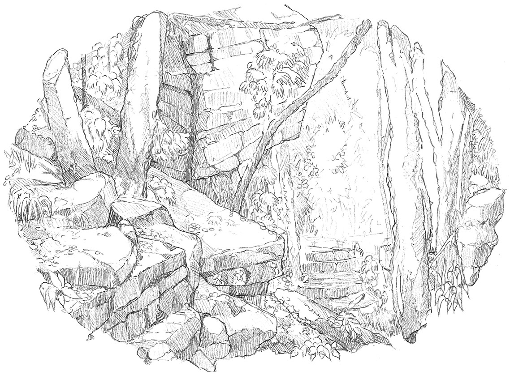

Note: this page contains unfinished or legacy content which is subject to change or removal! If you spot any errors in the content or grammar, please do let me know.
In spite of their importance, prominence, and prevalence in the natural world, rocks, boulders, and cliffs are often overlooked as useful props when constructing our environmental stages in artwork! What can they offer us? How do rocks make a viewer feel; or, more accurately, which emotions and personalities are they most strongly associated with? And why do they remain so inscrutable to us? Stones lie across the landscape as faceless, motionless, and immovable forms. In art and literature